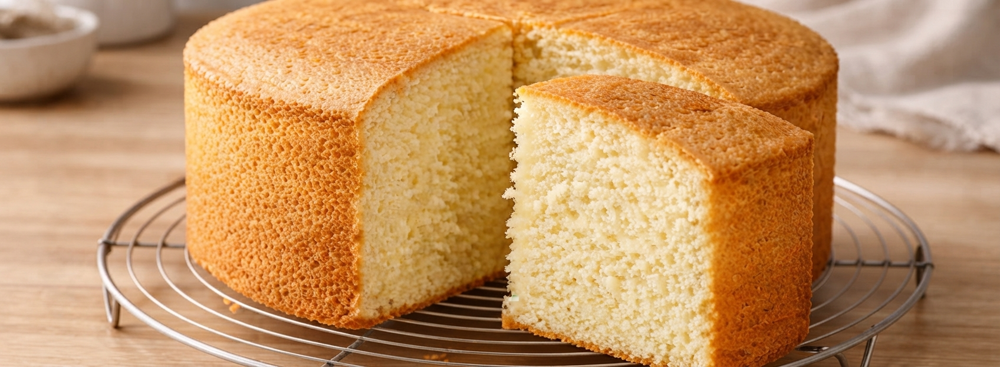
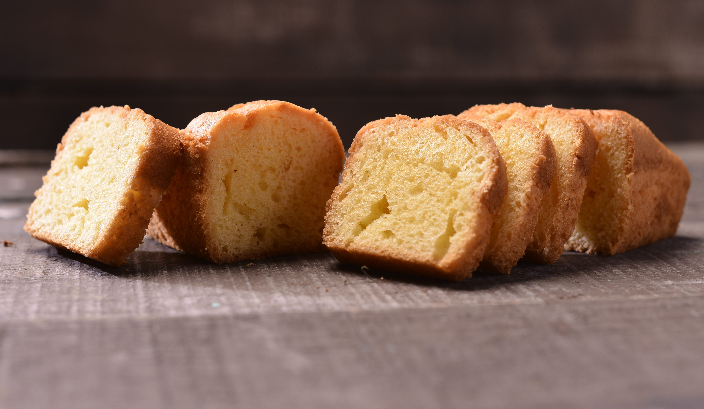

FLAN CON DULCE DE LECHE
Historia del Flan con Dulce de Leche
El flan es uno de los postres más antiguos de la gastronomía occidental, con raíces que se remontan a la época romana. Llegó a América a través de la colonización española y se adaptó rápidamente a las cocinas locales de toda Latinoamérica. En Argentina adquirió una identidad propia al combinarse con el dulce de leche, uno de los productos más emblemáticos del país. El resultado es un postre cremoso y suave que se convirtió en un clásico infaltable de las mesas familiares argentinas, presente en cumpleaños, almuerzos dominicales y restaurantes de todo el país.
Ingredientes (6 porciones)
| Ingrediente | Cantidad |
|---|---|
| Leche | 500 ml |
| Huevos | 4 unidades |
| Azúcar | 150 g |
| Esencia de vainilla | 1 cucharadita |
| Dulce de leche | 200 g |
Paso a paso
- Colocar el azúcar en una sartén a fuego medio y preparar un caramelo, revolviendo hasta que tome color dorado.
- Verter el caramelo caliente en el fondo de un molde para flan y distribuirlo bien.
- Batir los huevos en un recipiente, agregar la leche y la esencia de vainilla, y mezclar bien.
- Verter la preparación sobre el molde acaramelado pasándola por un colador para evitar grumos.
- Cocinar a baño María en horno a 180°C durante 50 minutos, hasta que el flan esté firme.
- Dejar enfriar completamente, desmoldar y servir con dulce de leche por encima.

BIZCOCHUELO
Historia del Bizcochuelo
El bizcochuelo es una preparación de origen europeo, derivada del biscocho o bizcocho español, que llegó a Argentina con la inmigración y se arraigó profundamente en la repostería casera local. Su nombre hace referencia a su textura característica: esponjosa, suave y aireada. En la cocina argentina se convirtió en la base de innumerables tortas y pasteles de cumpleaños, rellenos con dulce de leche, crema o mermelada. Su receta mínima de cuatro ingredientes lo hace accesible para cualquier cocinero, y su resultado siempre elegante lo posiciona como uno de los clásicos indiscutidos de la repostería del país.
Ingredientes (8 porciones)
| Ingrediente | Cantidad |
|---|---|
| Huevos | 4 unidades |
| Azúcar | 200 g |
| Harina leudante | 200 g |
| Esencia de vainilla | 1 cucharadita |
Paso a paso
- Precalentar el horno a 180°C. Enmantecar y enharinar un molde redondo.
- Batir los huevos junto con el azúcar durante varios minutos hasta obtener una mezcla espumosa y clara.
- Agregar la esencia de vainilla y mezclar suavemente.
- Incorporar la harina leudante tamizada poco a poco, integrando con movimientos envolventes para no perder el aire de la mezcla.
- Verter la preparación en el molde y hornear a 180°C durante 35 minutos.
- Dejar enfriar dentro del molde antes de desmoldar.

BUDÍN DE VAINILLA
Historia del Budín de Vainilla
El budín es una preparación de origen anglosajón cuyo nombre deriva del inglés "pudding". Llegó a Argentina a través de la influencia europea y se adaptó a los ingredientes y gustos locales, convirtiéndose en un clásico de la merienda y la repostería casera. La versión de vainilla es la más popular en los hogares argentinos por su sencillez y su sabor suave y reconfortante. Se hornea en un molde alargado característico y se consume solo o acompañado de dulce de leche, resultando en un postre económico, rendidor y al alcance de cualquier cocina.
Ingredientes (8 porciones)
| Ingrediente | Cantidad |
|---|---|
| Harina leudante | 250 g |
| Azúcar | 150 g |
| Huevos | 3 unidades |
| Leche | 100 ml |
| Aceite | 100 ml |
| Esencia de vainilla | 1 cucharada |
Paso a paso
- Precalentar el horno a 180°C. Enmantecar y enharinar una budinera.
- Batir los huevos con el azúcar hasta obtener una mezcla homogénea y clara.
- Agregar el aceite, la leche y la esencia de vainilla, y mezclar bien.
- Incorporar la harina tamizada poco a poco, mezclando hasta obtener una preparación lisa y sin grumos.
- Verter la mezcla en la budinera y hornear a 180°C durante 40 minutos.
- Dejar enfriar antes de desmoldar y servir.

TIRAMISÚ
Historia del Tiramisú
El tiramisú es un postre de origen italiano elaborado tradicionalmente con vainillas, café, queso mascarpone, cacao y una crema suave. Su origen se relaciona principalmente con la región del Véneto, aunque existen distintas versiones sobre su creación. Con el paso del tiempo se convirtió en uno de los postres italianos más conocidos en todo el mundo.
Ingredientes (6 porciones)
| Ingrediente | Cantidad |
|---|---|
| Queso mascarpone | 500 g |
| Vainillas | 24 unidades |
| Huevos | 4 unidades |
| Azúcar | 100 g |
| Café fuerte | 250 ml |
| Cacao amargo | A gusto |
Paso a paso
- Preparar el café y dejarlo enfriar completamente.
- Separar las claras de las yemas.
- Batir las yemas con el azúcar hasta obtener una mezcla cremosa.
- Incorporar el mascarpone y mezclar hasta obtener una crema homogénea.
- Batir las claras a punto de nieve e incorporarlas suavemente a la crema.
- Mojar rápidamente las vainillas en el café sin dejarlas demasiado blandas.
- Colocar una capa de vainillas y cubrir con una capa de crema.
- Repetir las capas hasta terminar los ingredientes.
- Refrigerar durante al menos 4 horas.
- Espolvorear cacao amargo por encima antes de servir.

CHEESECAKE
Historia del Cheesecake
El cheesecake es un postre a base de queso crema que posee antecedentes muy antiguos. Preparaciones similares ya existían en la antigua Grecia, aunque la versión moderna se desarrolló principalmente en Estados Unidos. Actualmente existen numerosas variedades, tanto horneadas como frías, y suele acompañarse con frutas, salsas o mermeladas.
Ingredientes (8 porciones)
| Ingrediente | Cantidad |
|---|---|
| Galletitas dulces | 200 g |
| Manteca | 80 g |
| Queso crema | 600 g |
| Azúcar | 150 g |
| Huevos | 3 unidades |
| Esencia de vainilla | 1 cucharadita |
| Crema de leche | 200 ml |
Paso a paso
- Triturar las galletitas hasta obtener un polvo fino.
- Mezclarlas con la manteca derretida.
- Colocar la mezcla en la base de un molde y presionar bien.
- Batir el queso crema con el azúcar hasta obtener una preparación suave.
- Agregar los huevos de a uno y luego incorporar la vainilla y la crema.
- Verter la preparación sobre la base de galletitas.
- Hornear a 160 °C durante aproximadamente 50 a 60 minutos.
- Dejar enfriar completamente y llevar a la heladera durante varias horas.
- Desmoldar y servir frío.

CHOCOTORTA
Historia de la Chocotorta
La chocotorta es un postre argentino creado durante la década de 1980. Se caracteriza por su preparación sencilla y por combinar galletitas de chocolate con dulce de leche y queso crema. Se convirtió rápidamente en un clásico de cumpleaños y reuniones familiares debido a que no necesita horno y puede prepararse en poco tiempo.
Ingredientes (8 porciones)
| Ingrediente | Cantidad |
|---|---|
| Galletitas de chocolate | 400 g |
| Dulce de leche | 500 g |
| Queso crema | 400 g |
| Leche | 250 ml |
Paso a paso
- Mezclar el dulce de leche con el queso crema hasta formar una crema homogénea.
- Colocar la leche en un recipiente.
- Pasar rápidamente las galletitas por la leche.
- Formar una primera capa de galletitas en una fuente.
- Cubrir con una capa de la crema de dulce de leche.
- Repetir las capas hasta terminar los ingredientes.
- Finalizar con una capa de crema.
- Refrigerar durante al menos 4 horas antes de servir.

TORTA DE CHOCOLATE
Historia de la Torta de Chocolate
La torta de chocolate se popularizó especialmente a partir del desarrollo y la incorporación del cacao y el chocolate en la pastelería europea. Con el tiempo aparecieron numerosas recetas y variantes. Actualmente es uno de los postres más populares para cumpleaños, celebraciones y reuniones familiares.
Ingredientes (8 porciones)
| Ingrediente | Cantidad |
|---|---|
| Harina | 200 g |
| Cacao amargo | 50 g |
| Azúcar | 200 g |
| Huevos | 3 unidades |
| Leche | 150 ml |
| Aceite | 100 ml |
| Polvo de hornear | 1 cucharadita |
| Esencia de vainilla | 1 cucharadita |
Paso a paso
- Precalentar el horno a 180 °C.
- Batir los huevos con el azúcar hasta integrar.
- Agregar la leche, el aceite y la esencia de vainilla.
- Tamizar la harina, el cacao y el polvo de hornear.
- Incorporar los ingredientes secos a la mezcla líquida.
- Mezclar hasta obtener una preparación homogénea.
- Colocar en un molde previamente enmantecado y enharinado.
- Hornear durante 35 a 40 minutos.
- Dejar enfriar antes de desmoldar y decorar.

TORTA DE RICOTA
Historia de la Torta de Ricota
La torta de ricota es una preparación tradicional de la pastelería argentina, muy relacionada con la influencia de la inmigración italiana. La ricota, utilizada en numerosas preparaciones dulces y saladas, encontró un lugar importante en la cocina argentina. Esta torta se caracteriza por una masa suave y un relleno cremoso de ricota.
Ingredientes (8 porciones)
| Ingrediente | Cantidad |
|---|---|
| Harina | 300 g |
| Manteca | 150 g |
| Azúcar | 150 g |
| Huevo | 1 unidad |
| Ricota | 500 g |
| Azúcar para el relleno | 150 g |
| Huevos para el relleno | 2 unidades |
| Esencia de vainilla | 1 cucharadita |
Paso a paso
- Mezclar la manteca con el azúcar.
- Agregar el huevo e integrar.
- Incorporar la harina hasta formar una masa suave.
- Envolver la masa y llevar a la heladera durante 30 minutos.
- Mezclar la ricota con el azúcar, los huevos y la vainilla.
- Estirar una parte de la masa y cubrir la base del molde.
- Agregar el relleno de ricota.
- Cubrir con el resto de la masa.
- Hornear a 180 °C durante 40 a 45 minutos.
- Dejar enfriar antes de servir.

LEMON PIE
Historia del Lemon Pie
El lemon pie es un postre elaborado con una base de masa, una crema de limón y una cobertura de merengue. Se desarrolló dentro de la tradición de la pastelería occidental y se hizo especialmente popular en países como Estados Unidos y Reino Unido. Su combinación de sabores dulces y ácidos lo convirtió en un clásico de la repostería.
Ingredientes (8 porciones)
| Ingrediente | Cantidad |
|---|---|
| Harina | 200 g |
| Manteca | 100 g |
| Azúcar | 80 g |
| Huevo | 1 unidad |
| Leche condensada | 1 lata |
| Jugo de limón | 120 ml |
| Yemas | 3 unidades |
| Claras | 3 unidades |
| Azúcar para el merengue | 180 g |
Paso a paso
- Mezclar la manteca con el azúcar.
- Agregar el huevo y luego incorporar la harina.
- Formar una masa y dejar reposar en la heladera durante 30 minutos.
- Estirar la masa y colocarla en una tartera.
- Hornear a 180 °C durante 15 a 20 minutos.
- Mezclar la leche condensada con las yemas y el jugo de limón.
- Colocar la crema sobre la masa previamente horneada.
- Hornear nuevamente durante unos 10 minutos.
- Batir las claras y agregar gradualmente el azúcar hasta formar un merengue firme.
- Colocar el merengue sobre la crema de limón.
- Gratinar ligeramente el merengue y dejar enfriar antes de servir.

PASTA FROLA
Historia de la Pasta Frola
La pasta frola es una tarta muy popular en Argentina, Uruguay y otros países de Sudamérica. Su origen está relacionado con preparaciones europeas de masas dulces rellenas, especialmente de tradición italiana. En Argentina se convirtió en una preparación clásica de la merienda y suele elaborarse con dulce de membrillo, aunque también existen versiones con dulce de batata o dulce de leche.
Ingredientes (8 porciones)
| Ingrediente | Cantidad |
|---|---|
| Harina | 300 g |
| Manteca | 150 g |
| Azúcar | 120 g |
| Huevos | 2 unidades |
| Esencia de vainilla | 1 cucharadita |
| Dulce de membrillo | 400 g |
| Agua | 2 cucharadas |
Paso a paso
- Batir la manteca con el azúcar hasta obtener una mezcla cremosa.
- Agregar los huevos y la esencia de vainilla.
- Incorporar la harina y formar una masa suave.
- Dejar reposar la masa en la heladera durante 30 minutos.
- Separar una parte de la masa para realizar las tiras superiores.
- Estirar el resto y cubrir la base de una tartera.
- Derretir el dulce de membrillo con unas cucharadas de agua.
- Colocar el dulce sobre la masa.
- Formar tiras con la masa restante y colocarlas sobre el dulce.
- Hornear a 180 °C durante 35 a 40 minutos.
- Dejar enfriar antes de cortar.

ALFAJORES CASEROS
Historia de los Alfajores Caseros
Los alfajores tienen una historia relacionada con la tradición árabe y española y llegaron a América durante la época colonial. En Argentina adquirieron características propias y se convirtieron en uno de los dulces más representativos del país. Existen numerosas variedades, siendo muy populares los rellenos con dulce de leche y cubiertos con chocolate o coco.
Ingredientes (12 alfajores)
| Ingrediente | Cantidad |
|---|---|
| Harina | 200 g |
| Maicena | 200 g |
| Manteca | 150 g |
| Azúcar | 150 g |
| Yemas | 3 unidades |
| Esencia de vainilla | 1 cucharadita |
| Polvo de hornear | 1 cucharadita |
| Dulce de leche | 400 g |
| Coco rallado | A gusto |
Paso a paso
- Batir la manteca con el azúcar hasta obtener una mezcla cremosa.
- Agregar las yemas y la esencia de vainilla.
- Incorporar la harina, la maicena y el polvo de hornear.
- Formar una masa suave sin amasar demasiado.
- Dejar reposar en la heladera durante 30 minutos.
- Estirar la masa hasta obtener aproximadamente 5 mm de espesor.
- Cortar discos y colocarlos en una bandeja.
- Hornear a 180 °C durante 8 a 10 minutos, sin dejar que se doren demasiado.
- Dejar enfriar completamente.
- Rellenar las tapas con dulce de leche.
- Pasar los bordes por coco rallado.

CRUMBLE DE MANZANA
Historia del Crumble de Manzana
El crumble es un postre de origen británico que se popularizó durante el siglo XX. Su característica principal es la combinación de frutas cocidas con una cobertura crocante elaborada con harina, manteca y azúcar. El crumble de manzana se convirtió en una de sus versiones más conocidas y es valorado por su preparación sencilla y su contraste entre la fruta tierna y la cubierta crujiente.
Ingredientes (6 porciones)
| Ingrediente | Cantidad |
|---|---|
| Manzanas | 6 unidades |
| Azúcar | 100 g |
| Canela | 1 cucharadita |
| Harina | 150 g |
| Manteca fría | 100 g |
| Azúcar para el crumble | 100 g |
Paso a paso
- Pelar las manzanas y cortarlas en cubos o rodajas finas.
- Colocarlas en una fuente para horno.
- Agregar el azúcar y la canela y mezclar.
- En otro recipiente mezclar la harina, el azúcar y la manteca fría.
- Desmenuzar con los dedos hasta obtener una textura arenosa.
- Distribuir el crumble sobre las manzanas.
- Hornear a 180 °C durante 35 a 40 minutos.
- Retirar cuando la superficie esté dorada y crujiente.
- Servir tibio, solo o acompañado con helado.

PERAS AL VINO
Historia de las Peras al Vino
Las peras al vino son un postre tradicional de la cocina europea, especialmente relacionado con España y Francia. La preparación consiste en cocinar lentamente las peras en vino junto con azúcar y especias, logrando una fruta tierna y aromática. Con el tiempo se incorporó a distintas cocinas y actualmente es un postre clásico de la gastronomía europea.
Ingredientes (4 porciones)
| Ingrediente | Cantidad |
|---|---|
| Peras | 4 unidades |
| Vino tinto | 750 ml |
| Azúcar | 150 g |
| Canela | 1 rama |
| Cáscara de naranja | 1 tira |
| Clavo de olor | 2 unidades |
Paso a paso
- Pelar las peras dejando el tallo.
- Colocar el vino, el azúcar, la canela, la cáscara de naranja y los clavos en una olla.
- Calentar hasta que el azúcar se disuelva.
- Agregar las peras y cocinar a fuego bajo.
- Cocinar durante aproximadamente 30 a 40 minutos, girando las peras ocasionalmente.
- Retirar las peras cuando estén tiernas.
- Continuar reduciendo el líquido hasta obtener una salsa ligeramente espesa.
- Servir las peras con la reducción de vino por encima.

HELADO CASERO
Historia del Helado Casero
El helado tiene antecedentes muy antiguos relacionados con preparaciones frías elaboradas con nieve o hielo. Con el desarrollo de las técnicas de refrigeración y la incorporación de productos lácteos, surgieron las versiones modernas que conocemos actualmente. El helado casero permite preparar una versión sencilla utilizando pocos ingredientes y puede adaptarse a diferentes sabores.
Ingredientes (6 porciones)
| Ingrediente | Cantidad |
|---|---|
| Crema de leche | 500 ml |
| Leche condensada | 400 g |
| Esencia de vainilla | 1 cucharadita |
| Chocolate o frutas | Opcional |
Paso a paso
- Colocar la crema de leche bien fría en un recipiente.
- Batir hasta obtener una crema firme, teniendo cuidado de no sobrebatir.
- Agregar la leche condensada y la esencia de vainilla.
- Mezclar suavemente hasta integrar todos los ingredientes.
- Si se desea, agregar chocolate picado, frutas o algún otro ingrediente.
- Colocar la preparación en un recipiente con tapa.
- Llevar al freezer durante al menos 6 horas.
- Retirar unos minutos antes de servir para que tome una textura más cremosa.